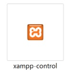
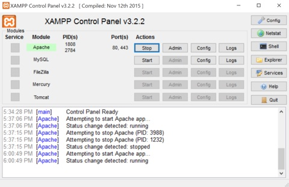
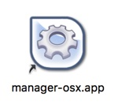
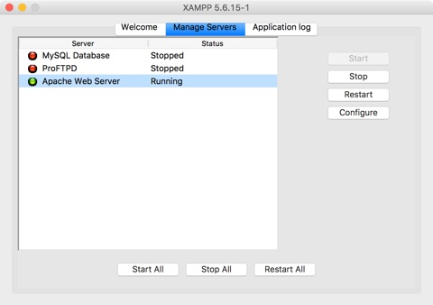
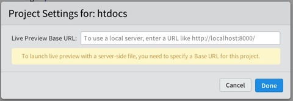

Testing PHP Locally
Introduction
Way back in week 2 you installed XAMPP (pronounced shamp). We have been doing all of our work inside of XAMPP (the htdocs folder is inside of the xampp folder). But until now we haven't needed to fire up the server. With the introduction of modularization this week and the transitioning to PHP web pages, that is now changing.
A Workflow Change
Until this point when we wrote a web page with the .html or .htm extension, Brackets could use its built-in web server to let us test things by simply clicking the "Live Preview" icon. But, Brackets' built-in server can't handle files with a .php extension. That is where XAMPP comes in.
We can open the web pages in Brackets just like normal. We can write our html, css, javascript just like normal. We can add PHP to the web page with no problems. But, when we want to test our PHP page(s) we must first start the XAMPP Apache server. When the server is running, then we can test the page.
You will need to have the servers running while you are testing any web page with a .php extension and, once the value in the Project Settings dialog box is set, any web page.
Starting the Windows Apache Server
- You must launch the XAMPP Control Panel .
- This control is found inside the XAMPP folder on the C: drive.
- Once the Windows Control Panel is open, click the "Start" button to the right of Apache.
- If things work as expected, the background of the Apache text will turn green.

Starting the Mac Apache Server
- You must launch the XAMPP manager-osx.app in the Applications folder .
- Once the Mac Manager is open, click the "Manage Servers" tab.
- Then click the "Apache Web Server" item in the list, then the "Start" button on the right.
- If things work as expected, the status indicator to the left of the Apache Web Server will turn green.

Shut Down the Server
- When you are done testing, make sure to stop the server and quit the xampp application. Leaving it running uses computer resources and could be a potential security risk to your computer.
- Don't Forget!
Project Setting Dialog
When you open a file with a .php extension and work with it in Brackets and prepare to test it, the first time you click the Live Preview button, a Project Settings dialog box will open:

The dialog box wants to know the URL of the local server in order to run the page? The answer should be "http://localhost".
Type that into the text box in the dialog window. When done, click "Done".
If everything is working as it should, the page should load into the browser and you can see and test it.
Editing or Clearing the Project Setting Dialog
If you need to edit or change the Project Settings dialog box, it can be reopened from the File menu.
Recommendation
Once the Project Settings dialog box has been given a value, it will expect the Apache web server to be running whenever a live preview is run. If not, it will indicate that the "webpage is not available". It will be easier to:
- Launch XAMPP and start the web server when you start Brackets.
- Stop the web server and quit XAMPP when you quit Brackets.
Think of them as mutually dependent on one another.
Video Demonstration
This video will demonstrate the Testing procedure described below.
Test it
Before leaving this activity, let's make sure everything is working.
- Locate and launch the XAMPP application.
- Start the Apache web server.
- Open Brackets.
- Locate the Franklin weather page.
- Copy and paste the weather page into the same folder that it existed.
- Rename the copy "franklin.php".
- In the <main> element write the following:
<?php echo '<h1>This is PHP</h1>'; ?> - Save the page.
- Click the Live Preview icon in Brackets.
- When the Project Settings dialog box opens, type the URL shown earlier in this document.
- Click "Done".
- The page should now open in the browser and somewhere in the main content area you should see an h1 heading of "This is PHP".
- If everything worked then things are ready for you to proceed.
- If things did not work, get some help or troubleshoot until they do.
- When you are done, quit Brackets.
- Stop the Apache Web server.
- Quit XAMPP.